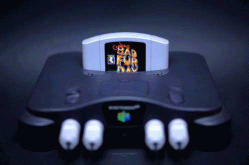

| Names |
Images |
Description |
Notabilities |
| Nintendo 64 |

|
The Nintendo Entertainment System, an 8-bit system, was one of
Nintendo's greatest successes. It sold around 61 Million units.
Unlike the Color TV Games, the NES is a full console and could play
different titles, on interchangeable cartridges, that could be
purchased in stores. A redesign was made in 1993 called AV Famicom
in Japan and New-Style NES in other regions such as America. (1985)
|
8-bit home gaming |
|
Super Nintendo Entertainment System/Super Famicom
|
|
The Super Nintendo Entertainment System featured much enhanced
graphics, a brand new controller, and more. It was the 16-bit
console by Nintendo. Though it sold well, (around 49 million units)
the Sega Genesis was a major competitor to the SNES, with both
Nintendo and Sega giving an extensive ad campaign calling out both
sides. Like the NES, it had a redesign late in its life, this time
being the Super Famicom Jr. in Japan and New-Style SNES in other
regions. (1991)
|
High-power 16-bit gaming
|
| Nintendo 64 |

|
The Nintendo 64 featured greatly improved graphics, now 3D, and a
new controller that introduced the modern joystick. It was also the
first home console to have four controller ports built into the
system. It sold around 32 million units. With its lack of a disc
format, the lack of strong third-party support, and it being
released after its competitors' consoles, it could not sell as well
as the PlayStation. (1996)
|
3D games & 4-player compatability
|
| Gameboy |
|
The Game Boy was the first portable, interchangeable cartridge
handheld by Nintendo. Games were 8-bit, black-and-white, played on a
green-tinted screen. The system had a red LED which showed the
remaining power. It could last for over 15 hours on its required 4
AA batteries. (1989)
|
Portable gaming |
| Gameboy Pocket |
|
Similar to the Game Boy but slimmer with a monochrome screen rather
than the original pea soup screen. It takes 2 AAA batteries and
lasts for a little less time. The first releases of the Game Boy
Pocket did not come with the red LED, as shown in the photo. Due to
high demand, Nintendo added the LED to the system. (1996)
|
Smaller version to Gameboy
|